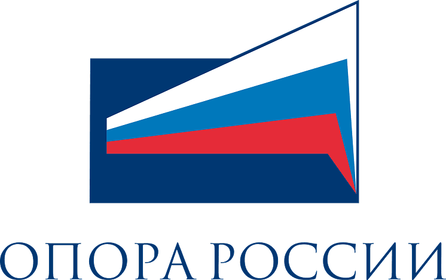
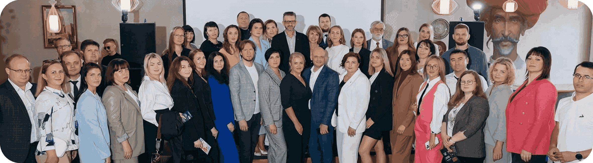
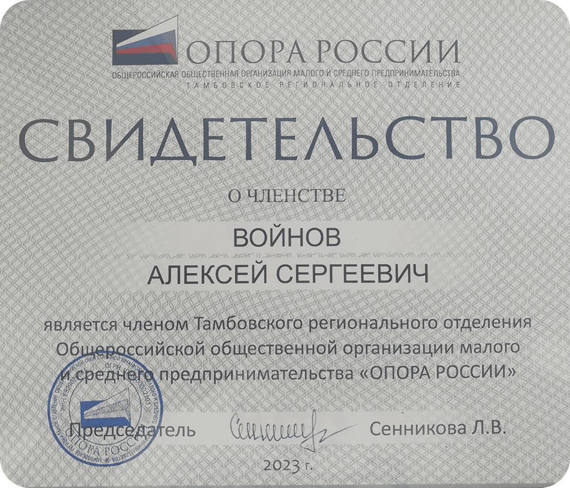
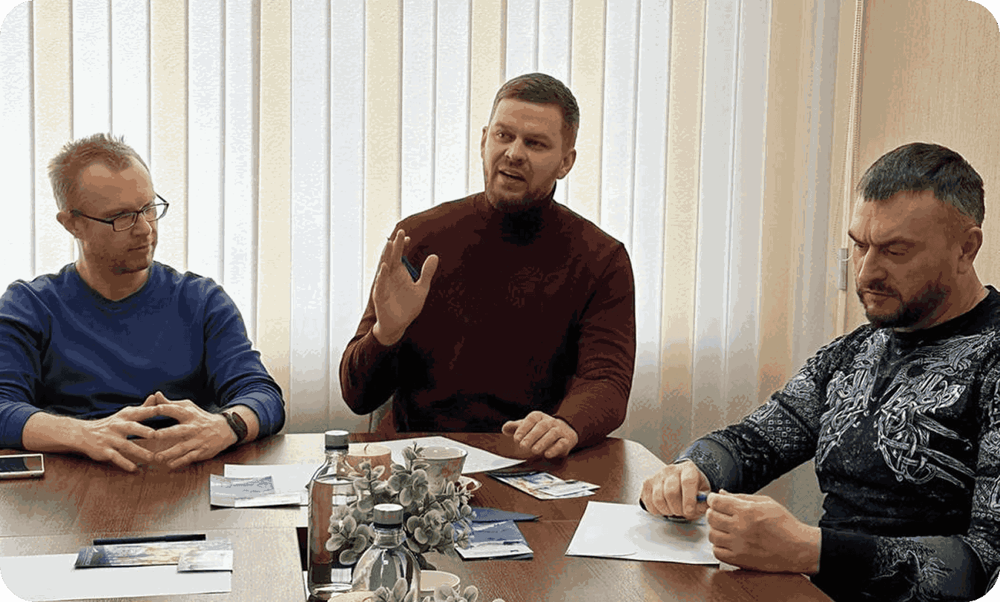

Членство в Тамбовском региональном отделении ОПОРА РОССИИ
«Опора России» — организация, которая активно работает над поддержкой местных сообществ, развитием предпринимательской среды и защитой интересов малого и среднего бизнеса.
Руководитель Бухгалтерского бюро №1 в 2023 году вступил в ряды Общероссийской общественной организации малого и среднего предпринимательства «Опора России».
В Тамбовском региональном отделении «Опоры России» деятельность Бухгалтерского бюро №1 ведется сразу в трёх комитетах, созданных в региональном отделении

Комитет по налогам и бюджету
Здесь наша деятельность направлена на устранение излишних административных барьеров для предпринимателей, устранению пробелов и нелепостей в законодательстве, препятствующих предпринимательской деятельности и замедлению гражданского оборота, упрощение избыточного регулирования в сфере предпринимательской деятельности и решению текущих проблем правоприменительной практики в налоговой сфере.
Комитет по развитию института самозанятых
Здесь наша деятельность носит информационно-просветительский характер, в основном для студентов и начинающих предпринимателей, направлена на предоставление информации о налоговом режиме «Налог на профессиональный доход», сфере его применения, условиях использования, правоприменительной практике, плюсах и минусах данного налогового режима, а также на сбор и анализ информации о практике применения этого налогового режима, формулированию предложений и инициатив по развитию и модернизации данного налогового режима.
Комитет по спорту
Здесь наша деятельность направлена на популяризацию активного образа жизни, выработку мер по снижению уровня административных и иных барьеров, препятствующих развитию инфраструктуры спорта, запуск механизмов налогового стимулирования предпринимателей и потребителей фитнес-услуг и вовлечение максимального количества предпринимателей и их сотрудников в занятия физической культурой и ведение спортивного образа жизни.

